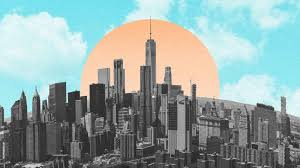
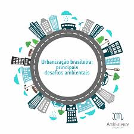
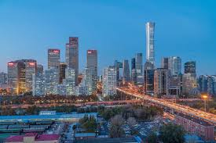
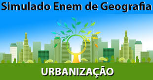
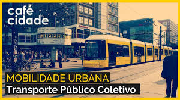
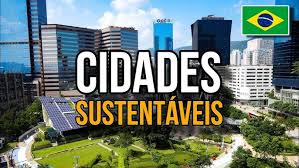

O que é fotosintese
A fotossíntese é o processo biológico que realiza a conversão de gás carbônico e água em compostos orgânicos, como a glicose, e oxigênio. Esse processo é essencial para a manutenção da vida na Terra, pois é a principal forma de captação de energia solar pelos seres vivos.
A fotossíntese é responsável pela produção de oxigênio, que é essencial para a sobrevivência de grande parte dos seres vivos na Terra. Além disso, a fotossíntese transforma a energia solar em energia química, que é a base da cadeia alimentar.
Por que estudar a urbanização é importante
Urbanização é...Estudar a urbanização é importante porque ela afeta diretamente a vida das pessoas. O crescimento das cidades afeta a moradia, o transporte, o meio ambiente, a economia e a qualidade de vida da população.
Compreender esse processo ajuda a identificar os desafios urbanos e a buscar soluções para problemas como trânsito, poluição, falta de moradia e desigualdade social. Além disso, permite entender como as cidades se desenvolvem ao longo do tempo.


Crescimento das cidades:
O crescimento urbano ocorre quando as cidades aumentam sua população e expandem sua área territorial. Esse fenômeno pode acontecer devido à industrialização, ao desenvolvimento econômico e à migração de pessoas para os centros urbanos.
À medida que as cidades crescem, aumenta a necessidade de infraestrutura, como escolas, hospitais, transporte público, saneamento básico e habitação para atender às demandas da população.
Problemas urbanos são dificuldades que surgem devido ao crescimento rápido e desorganizado das cidades. Eles afetam milhões de pessoas e podem prejudicar a qualidade de vida da população.
Entre os principais problemas urbanos estão o trânsito intenso, a poluição do ar e dos rios, a falta de moradias adequadas, a violência e as enchentes causadas pela ocupação irregular do solo.
Urbanização é:
Os problemas urbanos podem gerar consequências econômicas, sociais e ambientais. O excesso de veículos aumenta a poluição, enquanto a falta de planejamento pode causar alagamentos e dificuldades de mobilidade.
Por isso, é fundamental investir em planejamento urbano, transporte público eficiente, preservação ambiental e políticas habitacionais para garantir cidades mais organizadas, sustentáveis e inclusivas para todos.
Problemas Urbanos
Diferença entre Urbanização Planejada e Desordenada:
A urbanização planejada ocorre quando o crescimento da cidade é acompanhado por investimentos em infraestrutura, transporte, saúde, educação e habitação.
Já a urbanização desordenada acontece quando a população cresce mais rápido do que a capacidade da cidade de oferecer serviços básicos. Isso pode resultar em favelização, congestionamentos, poluição e ocupação de áreas de risco.
Principais Problemas Urbanos:
Os problemas urbanos podem ser divididos em três grandes grupos:
Sociais: falta de moradia, desemprego, violência e desigualdade social.
Ambientais: poluição do ar, da água e do solo, além da redução das áreas verdes.
Infraestrutura: trânsito intenso, deficiência no transporte público, saneamento inadequado e enchentes.

Mobilidade Urbana:
A mobilidade urbana corresponde à forma como as pessoas se deslocam dentro das cidades. Com o crescimento da população e o aumento do número de veículos, muitas cidades enfrentam congestionamentos frequentes, que geram perda de tempo, aumento da poluição e estresse para os moradores.
Para melhorar a mobilidade urbana, é importante investir em transporte público eficiente, ciclovias, calçadas acessíveis e sistemas de integração entre diferentes meios de transporte. Essas medidas ajudam a reduzir o uso excessivo de automóveis e tornam a circulação mais rápida e sustentável.
Planejamento Urbano: O planejamento urbano é o conjunto de estratégias utilizadas para organizar o crescimento das cidades de maneira sustentável. Seu objetivo é garantir que a expansão urbana aconteça de forma equilibrada, oferecendo infraestrutura adequada para todos os habitantes.
Entre as principais ações do planejamento urbano estão a construção de moradias, a ampliação do saneamento básico, a preservação de áreas verdes, a melhoria do transporte público e a criação de espaços de lazer.
Quer saber Mais
Prepare-se para transformar seus estudos no ENEM e aprenda mais sobre esses conteúdos acessando videoaulas, para reforçar o aprendizado!

COMO ACONTECE A URBANIZAÇÃO?
Nesta videoaula você vai entender como ocorre o crescimento das cidades, o aumento da população urbana e os impactos socioambientais desse processo.

Mobilidade Urbana e Transporte
Veja sobre transporte público, trânsito, mobilidade ativa e soluções inteligentes adotadas nas cidades modernas.

Cidades Sustentáveis
Entenda como as cidades podem crescer de forma sustentável utilizando recursos de reciclagem, energia limpa e planejamento urbano.
Problemas Urbanos e Sociedade
Aula completa sobre moradia, desigualdade social, periferialização e outros desafios enfrentados pelas grandes cidades.